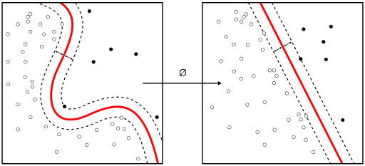
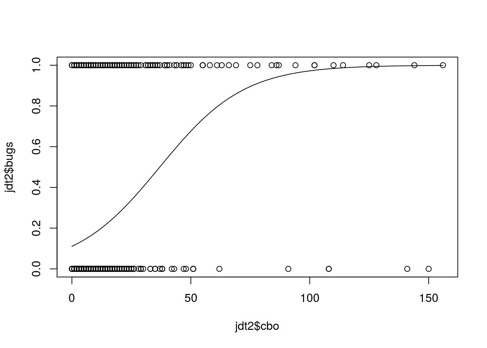
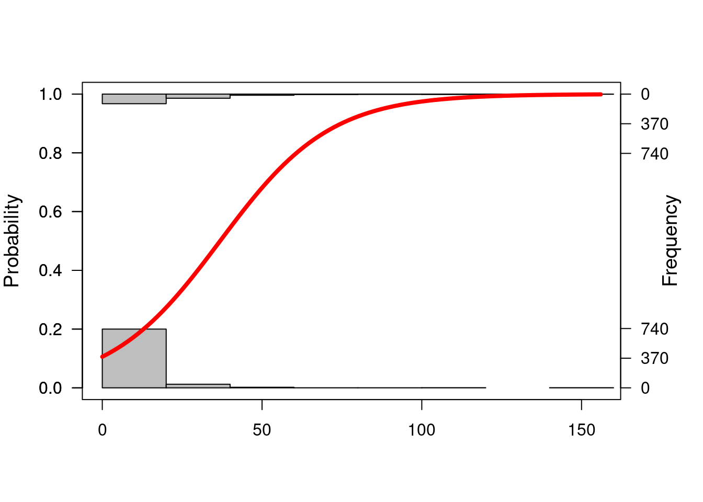

Chapter 9 Supervised Classification
A classification problem can be defined as the induction, from a dataset \(\cal D\), of a classification function \(\psi\) that, given the attribute vector of an instance/example, returns a class \({c}\). A regression problem, on the other hand, returns an numeric value.
Dataset, \(\cal D\), is typically composed of \(n\) attributes and a class attribute \(C\).
| \(Att_1\) | … | \(Att_n\) | \(Class\) |
|---|---|---|---|
| \(a_{11}\) | … | \(a_{1n}\) | \(c_1\) |
| \(a_{21}\) | … | \(a_{2n}\) | \(c_2\) |
| … | … | … | … |
| \(a_{m1}\) | … | \(a_{mn}\) | \(c_m\) |
Columns are usually called attributes or features. Typically, there is a class attribute, which can be numeric or discrete. When the class is numeric, it is a regression problem. With discrete values, we can talk about binary classification or multiclass (multinomial classification) when we have more than three values. There are variants such multi-label classification (we will cover these in the advanced models section).
Once we learn a model, new instances are classified. As shown in the next figure.

Supervised Classification
We have multiple types of models such as classification trees, rules, neural networks, and probabilistic classifiers that can be used to classify instances.
Fernandez et al provide an extensive comparison of 176 classifiers using the UCI dataset (Fernández-Delgado et al. 2014).
We will show the use of different classification techniques in the problem of defect prediction as running example. In this example,the different datasets are composed of classical metrics (Halstead or McCabe metrics) based on counts of operators/operands and like or object-oriented metrics (e.g. Chidamber and Kemerer) and the class attribute indicating whether the module or class was defective.
9.1 Classification Trees
There are several packages for inducing classification trees, for example with the party package (recursive partitioning):
library(foreign) # To load arff file
library(party) # Build a decision tree
library(caret)
jm1 <- read.arff("./datasets/defectPred/D1/JM1.arff")
str(jm1)## 'data.frame': 9593 obs. of 22 variables:
## $ LOC_BLANK : num 447 37 11 106 101 67 105 18 39 143 ...
## $ BRANCH_COUNT : num 826 29 405 240 464 187 344 47 163 67 ...
## $ LOC_CODE_AND_COMMENT : num 12 8 0 7 11 4 9 0 1 7 ...
## $ LOC_COMMENTS : num 157 42 17 344 75 1 40 10 6 49 ...
## $ CYCLOMATIC_COMPLEXITY: num 470 19 404 127 263 94 207 24 94 34 ...
## $ DESIGN_COMPLEXITY : num 385 19 2 105 256 63 171 13 67 25 ...
## $ ESSENTIAL_COMPLEXITY : num 113 6 1 33 140 27 58 1 3 1 ...
## $ LOC_EXECUTABLE : num 2824 133 814 952 1339 ...
## $ HALSTEAD_CONTENT : num 210 108 101 218 106 ...
## $ HALSTEAD_DIFFICULTY : num 384.4 46.3 206 215.2 337.4 ...
## $ HALSTEAD_EFFORT : num 31079782 232044 4294926 10100867 12120796 ...
## $ HALSTEAD_ERROR_EST : num 26.95 1.67 6.95 15.65 11.98 ...
## $ HALSTEAD_LENGTH : num 8441 685 2033 5669 4308 ...
## $ HALSTEAD_LEVEL : num 0 0.02 0 0 0 0.02 0 0.03 0.01 0.02 ...
## $ HALSTEAD_PROG_TIME : num 1726655 12891 238607 561159 673378 ...
## $ HALSTEAD_VOLUME : num 80843 5009 20848 46944 35928 ...
## $ NUM_OPERANDS : num 3021 295 813 2301 1556 ...
## $ NUM_OPERATORS : num 5420 390 1220 3368 2752 ...
## $ NUM_UNIQUE_OPERANDS : num 609 121 811 262 226 167 279 47 117 355 ...
## $ NUM_UNIQUE_OPERATORS : num 155 38 411 49 98 27 105 18 52 23 ...
## $ LOC_TOTAL : num 3442 222 844 1411 1532 ...
## $ Defective : Factor w/ 2 levels "N","Y": 2 2 2 2 2 2 2 2 1 2 ...# Stratified partition (training and test sets)
set.seed(1234)
inTrain <- createDataPartition(y=jm1$Defective,p=.60,list=FALSE)
jm1.train <- jm1[inTrain,]
jm1.test <- jm1[-inTrain,]
jm1.formula <- jm1$Defective ~ . # formula approach: defect as dependent variable and the rest as independent variables
jm1.ctree <- ctree(jm1.formula, data = jm1.train)
# predict on test data
pred <- predict(jm1.ctree, newdata = jm1.test)
# check prediction result
table(pred, jm1.test$Defective)##
## pred N Y
## N 168 11
## Y 2965 692plot(jm1.ctree)
Using the C50 package, there are two ways, specifying train and testing
library(C50)
require(utils)
# c50t <- C5.0(jm1.train[,-ncol(jm1.train)], jm1.train[,ncol(jm1.train)])
c50t <- C5.0(Defective ~ ., jm1.train)
summary(c50t)
plot(c50t)
c50tPred <- predict(c50t, jm1.train)
# table(c50tPred, jm1.train$Defective)Using the ‘rpart’ package
# Using the 'rpart' package
library(rpart)
jm1.rpart <- rpart(Defective ~ ., data=jm1.train, parms = list(prior = c(.65,.35), split = "information"))
# par(mfrow = c(1,2), xpd = NA)
plot(jm1.rpart)
text(jm1.rpart, use.n = TRUE)
jm1.rpart## n= 5757
##
## node), split, n, loss, yval, (yprob)
## * denotes terminal node
##
## 1) root 5757 2010.0 N (0.650 0.350)
## 2) LOC_TOTAL< 38.5 4172 969.0 N (0.751 0.249) *
## 3) LOC_TOTAL>=38.5 1585 825.0 Y (0.441 0.559)
## 6) LOC_TOTAL< 87.5 1027 540.0 N (0.523 0.477)
## 12) LOC_BLANK< 7.5 580 263.0 N (0.572 0.428) *
## 13) LOC_BLANK>=7.5 447 240.0 Y (0.465 0.535)
## 26) HALSTEAD_DIFFICULTY>=34.9 62 15.3 N (0.738 0.262) *
## 27) HALSTEAD_DIFFICULTY< 34.9 385 197.0 Y (0.430 0.570) *
## 7) LOC_TOTAL>=87.5 558 233.0 Y (0.316 0.684) *library(rpart.plot)
# asRules(jm1.rpart)
# fancyRpartPlot(jm1.rpart)9.2 Rules
C5 Rules
library(C50)
c50r <- C5.0(jm1.train[,-ncol(jm1.train)], jm1.train[,ncol(jm1.train)], rules = TRUE)
summary(c50r)##
## Call:
## C5.0.default(x = jm1.train[, -ncol(jm1.train)], y =
## jm1.train[, ncol(jm1.train)], rules = TRUE)
##
##
## C5.0 [Release 2.07 GPL Edition] Sat Oct 9 17:13:50 2021
## -------------------------------
##
## Class specified by attribute `outcome'
##
## Read 5757 cases (22 attributes) from undefined.data
##
## Rules:
##
## Rule 1: (5682/1005, lift 1.0)
## NUM_OPERANDS <= 376
## -> class N [0.823]
##
## Rule 2: (75/24, lift 3.7)
## NUM_OPERANDS > 376
## -> class Y [0.675]
##
## Default class: N
##
##
## Evaluation on training data (5757 cases):
##
## Rules
## ----------------
## No Errors
##
## 2 1029(17.9%) <<
##
##
## (a) (b) <-classified as
## ---- ----
## 4677 24 (a): class N
## 1005 51 (b): class Y
##
##
## Attribute usage:
##
## 100.00% NUM_OPERANDS
##
##
## Time: 0.1 secs# c50rPred <- predict(c50r, jm1.train)
# table(c50rPred, jm1.train$Defective)9.3 Distanced-based Methods
In this case, there is no model as such. Given a new instance to classify, this approach finds the closest \(k\)-neighbours to the given instance.
 (Source: Wikipedia - https://en.wikipedia.org/wiki/K-nearest_neighbors_algorithm)
(Source: Wikipedia - https://en.wikipedia.org/wiki/K-nearest_neighbors_algorithm)
library(class)
m1 <- knn(train=jm1.train[,-22], test=jm1.test[,-22], cl=jm1.train[,22], k=3)
table(jm1.test[,22],m1)## m1
## N Y
## N 2851 282
## Y 554 1499.4 Neural Networks

Neural Networks

Neural Networks
9.5 Support Vector Machine
 (Source: wikipedia https://en.wikipedia.org/wiki/Support_vector_machine)
9.6 Probabilistic Methods
9.6.1 Naive Bayes
Probabilistic graphical model assigning a probability to each possible outcome \(p(C_k, x_1,\ldots,x_n)\)
Naive Bayes
Using the klaR package with caret:
library(caret)
library(klaR)## Loading required package: MASS##
## Attaching package: 'MASS'## The following object is masked from 'package:dplyr':
##
## select## The following object is masked from 'package:sm':
##
## musclemodel <- NaiveBayes(Defective ~ ., data = jm1.train)
predictions <- predict(model, jm1.test[,-22])
confusionMatrix(predictions$class, jm1.test$Defective)## Confusion Matrix and Statistics
##
## Reference
## Prediction N Y
## N 2963 554
## Y 170 149
##
## Accuracy : 0.811
## 95% CI : (0.799, 0.824)
## No Information Rate : 0.817
## P-Value [Acc > NIR] : 0.815
##
## Kappa : 0.2
##
## Mcnemar's Test P-Value : <2e-16
##
## Sensitivity : 0.946
## Specificity : 0.212
## Pos Pred Value : 0.842
## Neg Pred Value : 0.467
## Prevalence : 0.817
## Detection Rate : 0.772
## Detection Prevalence : 0.917
## Balanced Accuracy : 0.579
##
## 'Positive' Class : N
## Using the e1071 package:
library (e1071)
n1 <-naiveBayes(jm1.train$Defective ~ ., data=jm1.train)
# Show first 3 results using 'class'
head(predict(n1,jm1.test, type = c("class")),3) # class by default## [1] Y Y Y
## Levels: N Y# Show first 3 results using 'raw'
head(predict(n1,jm1.test, type = c("raw")),3)## N Y
## [1,] 8.6e-50 1
## [2,] 0.0e+00 1
## [3,] 0.0e+00 1There are other variants such as TAN and KDB that do not assume the independece condition allowin us more complex structures.

Naive Bayes

Naive Bayes
A comprehensice comparison of
9.7 Linear Discriminant Analysis (LDA)
One classical approach to classification is Linear Discriminant Analysis (LDA), a generalization of Fisher’s linear discriminant, as a method used to find a linear combination of features to separate two or more classes.
ldaModel <- train (Defective ~ ., data=jm1.train, method="lda", preProc=c("center","scale"))
ldaModel## Linear Discriminant Analysis
##
## 5757 samples
## 21 predictor
## 2 classes: 'N', 'Y'
##
## Pre-processing: centered (21), scaled (21)
## Resampling: Bootstrapped (25 reps)
## Summary of sample sizes: 5757, 5757, 5757, 5757, 5757, 5757, ...
## Resampling results:
##
## Accuracy Kappa
## 0.82 0.164We can observe that we are training our model using Defective ~ . as a formula were Defective is the class variable separed by ~ and the ´.´ means the rest of the variables. Also, we are using a filter for the training data to (preProc) to center and scale.
Also, as stated in the documentation about the train method :
> http://topepo.github.io/caret/training.html
ctrl <- trainControl(method = "repeatedcv",repeats=3)
ldaModel <- train (Defective ~ ., data=jm1.train, method="lda", trControl=ctrl, preProc=c("center","scale"))
ldaModel## Linear Discriminant Analysis
##
## 5757 samples
## 21 predictor
## 2 classes: 'N', 'Y'
##
## Pre-processing: centered (21), scaled (21)
## Resampling: Cross-Validated (10 fold, repeated 3 times)
## Summary of sample sizes: 5181, 5182, 5181, 5182, 5180, 5181, ...
## Resampling results:
##
## Accuracy Kappa
## 0.82 0.159Instead of accuracy we can activate other metrics using summaryFunction=twoClassSummary such as ROC, sensitivity and specificity. To do so, we also need to speficy classProbs=TRUE.
ctrl <- trainControl(method = "repeatedcv",repeats=3, classProbs=TRUE, summaryFunction=twoClassSummary)
ldaModel3xcv10 <- train (Defective ~ ., data=jm1.train, method="lda", trControl=ctrl, preProc=c("center","scale"))
ldaModel3xcv10## Linear Discriminant Analysis
##
## 5757 samples
## 21 predictor
## 2 classes: 'N', 'Y'
##
## Pre-processing: centered (21), scaled (21)
## Resampling: Cross-Validated (10 fold, repeated 3 times)
## Summary of sample sizes: 5181, 5181, 5181, 5182, 5182, 5181, ...
## Resampling results:
##
## ROC Sens Spec
## 0.708 0.971 0.143Most methods have parameters that need to be optimised and that is one of the
plsFit3x10cv <- train (Defective ~ ., data=jm1.train, method="pls", trControl=trainControl(classProbs=TRUE), metric="ROC", preProc=c("center","scale"))
plsFit3x10cv## Partial Least Squares
##
## 5757 samples
## 21 predictor
## 2 classes: 'N', 'Y'
##
## Pre-processing: centered (21), scaled (21)
## Resampling: Bootstrapped (25 reps)
## Summary of sample sizes: 5757, 5757, 5757, 5757, 5757, 5757, ...
## Resampling results across tuning parameters:
##
## ncomp Accuracy Kappa
## 1 0.821 0.0620
## 2 0.821 0.0978
## 3 0.821 0.0992
##
## Accuracy was used to select the optimal model using the largest value.
## The final value used for the model was ncomp = 3.plot(plsFit3x10cv)
The parameter tuneLength allow us to specify the number values per parameter to consider.
plsFit3x10cv <- train (Defective ~ ., data=jm1.train, method="pls", trControl=ctrl, metric="ROC", tuneLength=5, preProc=c("center","scale"))
plsFit3x10cv## Partial Least Squares
##
## 5757 samples
## 21 predictor
## 2 classes: 'N', 'Y'
##
## Pre-processing: centered (21), scaled (21)
## Resampling: Cross-Validated (10 fold, repeated 3 times)
## Summary of sample sizes: 5181, 5182, 5181, 5182, 5181, 5182, ...
## Resampling results across tuning parameters:
##
## ncomp ROC Sens Spec
## 1 0.700 0.996 0.0429
## 2 0.703 0.989 0.0710
## 3 0.706 0.990 0.0720
## 4 0.708 0.990 0.0808
## 5 0.708 0.990 0.0808
##
## ROC was used to select the optimal model using the largest value.
## The final value used for the model was ncomp = 5.plot(plsFit3x10cv)
Finally to predict new cases, caret will use the best classfier obtained for prediction.
plsProbs <- predict(plsFit3x10cv, newdata = jm1.test, type = "prob")plsClasses <- predict(plsFit3x10cv, newdata = jm1.test, type = "raw")
confusionMatrix(data=plsClasses,jm1.test$Defective)## Confusion Matrix and Statistics
##
## Reference
## Prediction N Y
## N 3094 652
## Y 39 51
##
## Accuracy : 0.82
## 95% CI : (0.807, 0.832)
## No Information Rate : 0.817
## P-Value [Acc > NIR] : 0.317
##
## Kappa : 0.091
##
## Mcnemar's Test P-Value : <2e-16
##
## Sensitivity : 0.9876
## Specificity : 0.0725
## Pos Pred Value : 0.8259
## Neg Pred Value : 0.5667
## Prevalence : 0.8167
## Detection Rate : 0.8066
## Detection Prevalence : 0.9765
## Balanced Accuracy : 0.5300
##
## 'Positive' Class : N
## 9.7.1 Predicting the number of defects (numerical class)
From the Bug Prediction Repository (BPR) http://bug.inf.usi.ch/download.php
Some datasets contain CK and other 11 object-oriented metrics for the last version of the system plus categorized (with severity and priority) post-release defects. Using such dataset:
jdt <- read.csv("./datasets/defectPred/BPD/single-version-ck-oo-EclipseJDTCore.csv", sep=";")
# We just use the number of bugs, so we removed others
jdt$classname <- NULL
jdt$nonTrivialBugs <- NULL
jdt$majorBugs <- NULL
jdt$minorBugs <- NULL
jdt$criticalBugs <- NULL
jdt$highPriorityBugs <- NULL
jdt$X <- NULL
# Caret
library(caret)
# Split data into training and test datasets
set.seed(1)
inTrain <- createDataPartition(y=jdt$bugs,p=.8,list=FALSE)
jdt.train <- jdt[inTrain,]
jdt.test <- jdt[-inTrain,]ctrl <- trainControl(method = "repeatedcv",repeats=3)
glmModel <- train (bugs ~ ., data=jdt.train, method="glm", trControl=ctrl, preProc=c("center","scale"))
glmModel## Generalized Linear Model
##
## 798 samples
## 17 predictor
##
## Pre-processing: centered (17), scaled (17)
## Resampling: Cross-Validated (10 fold, repeated 3 times)
## Summary of sample sizes: 719, 718, 718, 718, 718, 718, ...
## Resampling results:
##
## RMSE Rsquared MAE
## 0.936 0.273 0.442Others such as Elasticnet:
glmnetModel <- train (bugs ~ ., data=jdt.train, method="glmnet", trControl=ctrl, preProc=c("center","scale"))
glmnetModel## glmnet
##
## 798 samples
## 17 predictor
##
## Pre-processing: centered (17), scaled (17)
## Resampling: Cross-Validated (10 fold, repeated 3 times)
## Summary of sample sizes: 718, 718, 718, 718, 718, 718, ...
## Resampling results across tuning parameters:
##
## alpha lambda RMSE Rsquared MAE
## 0.10 0.00112 1.004 0.249 0.458
## 0.10 0.01120 0.938 0.247 0.447
## 0.10 0.11195 0.840 0.272 0.430
## 0.55 0.00112 1.006 0.249 0.458
## 0.55 0.01120 0.918 0.249 0.444
## 0.55 0.11195 0.825 0.286 0.433
## 1.00 0.00112 1.008 0.248 0.458
## 1.00 0.01120 0.902 0.252 0.442
## 1.00 0.11195 0.831 0.282 0.446
##
## RMSE was used to select the optimal model using the smallest value.
## The final values used for the model were alpha = 0.55 and lambda = 0.112.9.8 Binary Logistic Regression (BLR)
Binary Logistic Regression (BLR) can models fault-proneness as follows
\[fp(X) = \frac{e^{logit()}}{1 + e^{logit(X)}}\]
where the simplest form for logit is:
\(logit(X) = c_{0} + c_{1}X\)
jdt <- read.csv("./datasets/defectPred/BPD/single-version-ck-oo-EclipseJDTCore.csv", sep=";")
# Caret
library(caret)
# Convert the response variable into a boolean variable (0/1)
jdt$bugs[jdt$bugs>=1]<-1
cbo <- jdt$cbo
bugs <- jdt$bugs
# Split data into training and test datasets
jdt2 = data.frame(cbo, bugs)
inTrain <- createDataPartition(y=jdt2$bugs,p=.8,list=FALSE)
jdtTrain <- jdt2[inTrain,]
jdtTest <- jdt2[-inTrain,]BLR models fault-proneness are as follows \(fp(X) = \frac{e^{logit()}}{1 + e^{logit(X)}}\)
where the simplest form for logit is \(logit(X) = c_{0} + c_{1}X\)
# logit regression
# glmLogit <- train (bugs ~ ., data=jdt.train, method="glm", family=binomial(link = logit))
glmLogit <- glm (bugs ~ ., data=jdtTrain, family=binomial(link = logit))
summary(glmLogit)##
## Call:
## glm(formula = bugs ~ ., family = binomial(link = logit), data = jdtTrain)
##
## Deviance Residuals:
## Min 1Q Median 3Q Max
## -3.654 -0.591 -0.515 -0.471 2.150
##
## Coefficients:
## Estimate Std. Error z value Pr(>|z|)
## (Intercept) -2.20649 0.13900 -15.87 <2e-16 ***
## cbo 0.06298 0.00765 8.23 <2e-16 ***
## ---
## Signif. codes: 0 '***' 0.001 '**' 0.01 '*' 0.05 '.' 0.1 ' ' 1
##
## (Dispersion parameter for binomial family taken to be 1)
##
## Null deviance: 807.98 on 797 degrees of freedom
## Residual deviance: 691.80 on 796 degrees of freedom
## AIC: 695.8
##
## Number of Fisher Scoring iterations: 5Predict a single point:
newData = data.frame(cbo = 3)
predict(glmLogit, newData, type = "response")## 1
## 0.117Draw the results, modified from: http://www.shizukalab.com/toolkits/plotting-logistic-regression-in-r
results <- predict(glmLogit, jdtTest, type = "response")
range(jdtTrain$cbo)## [1] 0 156range(results)## [1] 0.0992 0.9993plot(jdt2$cbo,jdt2$bugs)
curve(predict(glmLogit, data.frame(cbo=x), type = "response"),add=TRUE)
# points(jdtTrain$cbo,fitted(glmLogit))Another type of graph:
library(popbio)##
## Attaching package: 'popbio'## The following object is masked from 'package:caret':
##
## sensitivitylogi.hist.plot(jdt2$cbo,jdt2$bugs,boxp=FALSE,type="hist",col="gray")
9.9 The caret package
There are hundreds of packages to perform classification task in R, but many of those can be used throught the ‘caret’ package which helps with many of the data mining process task as described next.
The caret packagehttp://topepo.github.io/caret/ provides a unified interface for modeling and prediction with around 150 different models with tools for:
data splitting
pre-processing
feature selection
model tuning using resampling
variable importance estimation, etc.
Website: http://caret.r-forge.r-project.org
JSS Paper: www.jstatsoft.org/v28/i05/paper